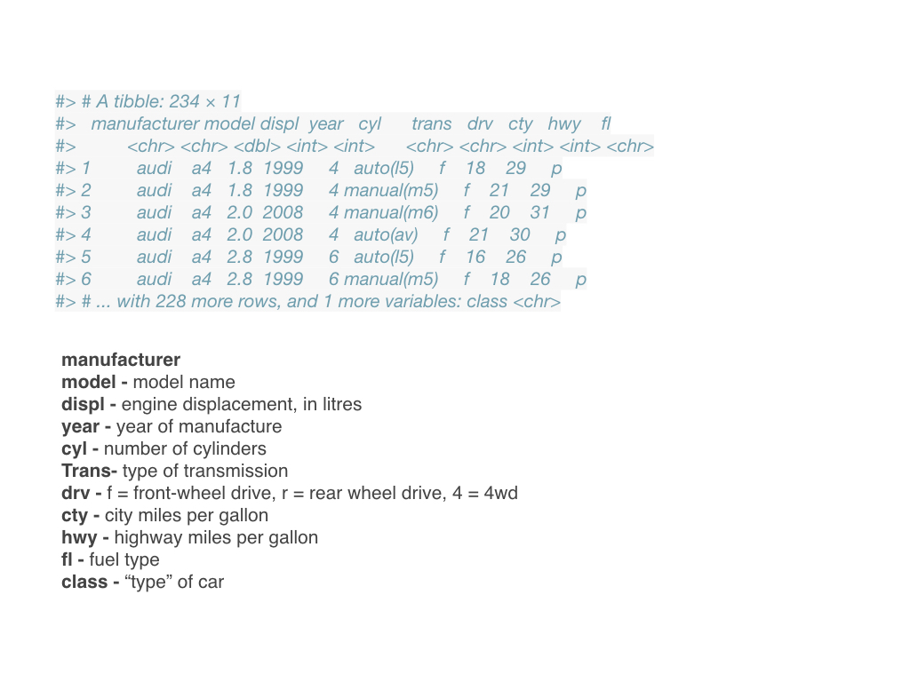

4 Tidyverse
4.1 A biological example to get us started
- Say you perform an experiment on two different strains of stickleback fish, one from an ocean population (RS) and one from a freshwater lake (BP) by making them microbe free.
- Microbes in the gut are known to interact with the gut epithelium in ways that lead to a proper maturation of the immune system.
4.2 A biological example to get us started
- You carry out an experiment by treating multiple fish from each strain so that some of them have a conventional microbiota, and some are inoculated with only one bacterial species.
- You then measure the levels of gene expression in the stickleback gut using RNA-seq.
- You suspect that the sex of the fish might be important so you track it too.
4.3 A biological example to get us started
4.4

4.5 Collecting Data with Analyses in Mind
- How should the data set be organized to best analyze it?
- What are the key properties of the variables?
- Why does it matter for learning
R? - Why does it matter for performing statistical analyses in
R?
4.6 Data set rules of thumb (aka Tidy Data)
- Store a copy of data in non-proprietary formats
- Leave an uncorrected file when doing analyses
- Maintain effective metadata about the data
- When you add observations to a database, add rows
- When you add variables to a database, add columns
- A column of data should contain only one data type
4.7
5 Tidyverse family of packages
5.1 Tidyverse family of packages
5.2 Tidyverse family of packages
Hadley Wickham and others have written
Rpackages to modify dataThese packages do many of the same things as base functions in
RHowever, they are specifically designed to do them faster and more easily
Wickham also wrote the package
GGPlot2for elegant graphics creationsGG stands for ‘Grammar of Graphics’
5.3 Example of a tibble

5.4 Example of a tibble

5.5 Key functions in dplyr for vectors
- Pick observations by their values with
filter(). - Reorder the rows with
arrange(). - Pick variables by their names with
select(). - Create new variables with functions of existing variables with
mutate(). - Collapse many values down to a single summary with
summarise().
5.6 filter(), arrange() & select()
filter(flights, month == 11 | month == 12)arrange(flights, year, month, day)select(flights, year, month, day)5.7 mutate() & transmutate()
This function will add a new variable that is a function of other variable(s)
mutate(flights,
gain = arr_delay - dep_delay,
hours = air_time / 60,
gain_per_hour = gain / hours
)This function will replace the old variable with the new variable
transmute(flights,
gain = arr_delay - dep_delay,
hours = air_time / 60,
gain_per_hour = gain / hours
)5.8 group_by( ) & summarize( )
This first function allows you to aggregate data by values of categorical variables (factors)
by_day <- group_by(flights, year, month, day)Once you have done this aggregation, you can then calculate values (in this case the mean) of other variables split by the new aggregated levels of the categorical variable
summarise(by_day, delay = mean(dep_delay, na.rm = TRUE))5.9 group_by( ) & summarize( )
- Note - you can get a lot of missing values!
- That’s because aggregation functions obey the usual rule of missing values:
- if there’s any missing value in the input, the output will be a missing value.
- fortunately, all aggregation functions have an
na.rmargument which removes the missing values prior to computation
5.10 The tidyverse
A collection of packages particularly helpful for working with tables.
- dplyr - manipulating data frames
- ggplot2 - data visualization
- readr - importing data
- stringr - string manipulation
- lubridate - dates and times
- purrr package for working with functions
5.11 The tidyverse
Load the main packages like this:
library(tidyverse)5.12 Tidy data
- Each row represents one observation
- Columns represent the different variables
5.13 Tidy data
The murders dataset is an example of a tidy data frame.
library(dslabs)
data(murders)
head(murders) state abb region population total
1 Alabama AL South 4779736 135
2 Alaska AK West 710231 19
3 Arizona AZ West 6392017 232
4 Arkansas AR South 2915918 93
5 California CA West 37253956 1257
6 Colorado CO West 5029196 655.14 Wide data
This is not tidy:
country 1960 1961 1962 1963 1964 1965
1 Germany 2.41 2.44 2.47 2.49 2.49 2.48
2 South Korea 6.16 5.99 5.79 5.57 5.36 5.16Later we learn how to wrangle into tidy format.
5.15 Tidy data
Same information in tidy format.
country year fertility
1 Germany 1960 2.41
2 South Korea 1960 6.16
3 Germany 1961 2.44
4 South Korea 1961 5.99
5 Germany 1962 2.47
6 South Korea 1962 5.79
7 Germany 1963 2.49
8 South Korea 1963 5.57
9 Germany 1964 2.49
10 South Korea 1964 5.36
11 Germany 1965 2.48
12 South Korea 1965 5.165.16 Manipulating data frames with dplyr
mutate- change or add columns
filter- filter rows based on a ruleselect- Subset the data by selecting specific columns
5.17 Adding a column with mutate
data("murders")
murders <- mutate(murders, rate = total / population * 100000)Notice that here we used total and population inside the function, which are objects that are not defined in our workspace.
5.18 Adding a column with mutate
We can see the new column now
head(murders) state abb region population total rate
1 Alabama AL South 4779736 135 2.824424
2 Alaska AK West 710231 19 2.675186
3 Arizona AZ West 6392017 232 3.629527
4 Arkansas AR South 2915918 93 3.189390
5 California CA West 37253956 1257 3.374138
6 Colorado CO West 5029196 65 1.2924535.19 Subsetting with filter
filter(murders, rate <= 0.71) state abb region population total rate
1 Hawaii HI West 1360301 7 0.5145920
2 Iowa IA North Central 3046355 21 0.6893484
3 New Hampshire NH Northeast 1316470 5 0.3798036
4 North Dakota ND North Central 672591 4 0.5947151
5 Vermont VT Northeast 625741 2 0.31962115.20 Selecting columns with select
new_table <- select(murders, state, region, rate)
filter(new_table, rate <= 0.71) state region rate
1 Hawaii West 0.5145920
2 Iowa North Central 0.6893484
3 New Hampshire Northeast 0.3798036
4 North Dakota North Central 0.5947151
5 Vermont Northeast 0.31962115.21 The pipe: %>%
\[ \mbox{original data } \rightarrow \mbox{ select } \rightarrow \mbox{ filter } \]
5.22 The pipe: %>%
When using the pipe, functions take left hand side as first argumemt:
murders %>% select(state, region, rate) %>% filter(rate <= 0.71) state region rate
1 Hawaii West 0.5145920
2 Iowa North Central 0.6893484
3 New Hampshire Northeast 0.3798036
4 North Dakota North Central 0.5947151
5 Vermont Northeast 0.31962115.23 More pipe example
sqrt(16)[1] 416 %>% sqrt()[1] 4log2(sqrt(16))[1] 216 %>% sqrt() %>% log2()[1] 25.24 Example: Use arguments with pipe
16 %>% sqrt() %>% log(base = 2)[1] 25.25 Pipe example
murders %>%
select(state, region, rate) %>%
filter(rate <= 0.71)5.26 Summarizing data
Summarizing variables is very common operation.
Average female heights:
data(heights)
s <- heights %>%
filter(sex == "Female") %>%
summarize(average = mean(height))5.27 Tidyverse always returns tables
s$average[1] 64.939425.28 Summarizing data
You can compute more than one summary
data(heights)
heights %>%
filter(sex == "Female") %>%
summarize(median = median(height),
q25 = quantile(height, .25),
q75 = quantile(height, .75)) median q25 q75
1 64.98031 63 675.29 Summarize only wors with one variable summaries
You can compute more than one summary
data(heights)
heights %>%
filter(sex == "Female") %>%
summarize(qs = quantile(height, c(1,2,3) / 4))Error in summarise_impl(.data, dots) :
Column `qs` must be length 1 (a summary value), not 35.30 pull
The us_murder_rate object defined above represents just one number. Yet we are storing it in a data frame:
s <- heights %>%
filter(sex == "Female") %>%
summarize(average = mean(height))
class(s)[1] "data.frame"5.31 pull
s %>% pull(average)[1] 64.939425.32 Group then summarize
heights %>% group_by(sex)# A tibble: 1,050 × 2
# Groups: sex [2]
sex height
<fct> <dbl>
1 Male 75
2 Male 70
3 Male 68
4 Male 74
5 Male 61
6 Female 65
7 Female 66
8 Female 62
9 Female 66
10 Male 67
# ℹ 1,040 more rows- The result does not look very different from
heights, except we seeGroups: sex [2]when we print the object. - Although not immediately obvious from its appearance, this is now a special data frame called a grouped data frame
5.33 Group then summarize
heights %>%
group_by(sex) %>%
summarize(average = mean(height), sd = sd(height))# A tibble: 2 × 3
sex average sd
<fct> <dbl> <dbl>
1 Female 64.9 3.76
2 Male 69.3 3.615.34 The dot operator
When using the pipe, the object being passed by the expression on the left side of the pipe can be accessed via
.Here is an example that is equivalent to pull:
s %>% .$average[1] 64.939425.35 do
We saw that summarize does not permit the use of functions that return more than one scaler
One way to apply such function is with
doThink of
doas a connection between R base and the tidyverse.General idea, write a function that returns what you want in a data frame, then call it with do.
5.36 do
qs <- function(x){
res <- quantile(x, c(1,2,3) / 4)
data_frame(q25 = res[1], median = res[2], q75 = res[3])
}
heights %>%
group_by(sex) %>%
do(qs(.$height))Warning: `data_frame()` was deprecated in tibble 1.1.0.
ℹ Please use `tibble()` instead.# A tibble: 2 × 4
# Groups: sex [2]
sex q25 median q75
<fct> <dbl> <dbl> <dbl>
1 Female 63 65.0 67
2 Male 67 69 725.37 Sorting data frames
murders %>%
arrange(population) %>%
head() state abb region population total rate
1 Wyoming WY West 563626 5 0.8871131
2 District of Columbia DC South 601723 99 16.4527532
3 Vermont VT Northeast 625741 2 0.3196211
4 North Dakota ND North Central 672591 4 0.5947151
5 Alaska AK West 710231 19 2.6751860
6 South Dakota SD North Central 814180 8 0.98258375.38 Sorting data frames
murders %>%
arrange(rate) %>%
head() state abb region population total rate
1 Vermont VT Northeast 625741 2 0.3196211
2 New Hampshire NH Northeast 1316470 5 0.3798036
3 Hawaii HI West 1360301 7 0.5145920
4 North Dakota ND North Central 672591 4 0.5947151
5 Iowa IA North Central 3046355 21 0.6893484
6 Idaho ID West 1567582 12 0.76551025.39 Sorting data frames
murders %>%
arrange(desc(rate)) %>%
head() state abb region population total rate
1 District of Columbia DC South 601723 99 16.452753
2 Louisiana LA South 4533372 351 7.742581
3 Missouri MO North Central 5988927 321 5.359892
4 Maryland MD South 5773552 293 5.074866
5 South Carolina SC South 4625364 207 4.475323
6 Delaware DE South 897934 38 4.2319375.40 Nested sorting
murders %>%
arrange(region, rate) %>%
head() state abb region population total rate
1 Vermont VT Northeast 625741 2 0.3196211
2 New Hampshire NH Northeast 1316470 5 0.3798036
3 Maine ME Northeast 1328361 11 0.8280881
4 Rhode Island RI Northeast 1052567 16 1.5200933
5 Massachusetts MA Northeast 6547629 118 1.8021791
6 New York NY Northeast 19378102 517 2.66795995.41 The top \(n\)
murders %>% top_n(10, rate) state abb region population total rate
1 Arizona AZ West 6392017 232 3.629527
2 Delaware DE South 897934 38 4.231937
3 District of Columbia DC South 601723 99 16.452753
4 Georgia GA South 9920000 376 3.790323
5 Louisiana LA South 4533372 351 7.742581
6 Maryland MD South 5773552 293 5.074866
7 Michigan MI North Central 9883640 413 4.178622
8 Mississippi MS South 2967297 120 4.044085
9 Missouri MO North Central 5988927 321 5.359892
10 South Carolina SC South 4625364 207 4.4753235.42 Tibbles
data(murders)
class(murders)[1] "data.frame"- Remember
group_bypermits stratifying data before computing summary statistics. - But where is the group information stored in the data frame?
5.43 Tibbles
murders %>% group_by(region) %>% head()# A tibble: 6 × 5
# Groups: region [2]
state abb region population total
<chr> <chr> <fct> <dbl> <dbl>
1 Alabama AL South 4779736 135
2 Alaska AK West 710231 19
3 Arizona AZ West 6392017 232
4 Arkansas AR South 2915918 93
5 California CA West 37253956 1257
6 Colorado CO West 5029196 655.44 Tibbles
murders %>% group_by(region) %>% class()[1] "grouped_df" "tbl_df" "tbl" "data.frame"5.45 Tibles versus data frames
- Tibbles display better
- Subsets of tibbles are tibbles
class(murders[,4])[1] "numeric"class(as_tibble(murders)[,4])[1] "tbl_df" "tbl" "data.frame"5.46 Tibles versus data frames
murders$PopulationNULLas_tibble(murders)$PopulationWarning: Unknown or uninitialised column: `Population`.NULL5.47 Tibles versus data frames
- Tibbles can have complex entries
tibble(id = c(1, 2, 3), func = c(mean, median, sd))# A tibble: 3 × 2
id func
<dbl> <list>
1 1 <fn>
2 2 <fn>
3 3 <fn> 5.48 Tibles versus data frames
- Tibbles can be grouped
5.49 Create a tibble using data_frame
grades <- data_frame(names = c("John", "Juan", "Jean", "Yao"),
exam_1 = c(95, 80, 90, 85),
exam_2 = c(90, 85, 85, 90))
grades# A tibble: 4 × 3
names exam_1 exam_2
<chr> <dbl> <dbl>
1 John 95 90
2 Juan 80 85
3 Jean 90 85
4 Yao 85 905.50 Another difference
grades <- data.frame(names = c("John", "Juan", "Jean", "Yao"),
exam_1 = c(95, 80, 90, 85),
exam_2 = c(90, 85, 85, 90))
class(grades$names)[1] "character"5.51 Another difference
- To avoid this, we use the rather cumbersome argument
stringsAsFactors:
grades <- data.frame(names = c("John", "Juan", "Jean", "Yao"),
exam_1 = c(95, 80, 90, 85),
exam_2 = c(90, 85, 85, 90),
stringsAsFactors = FALSE)
class(grades$names)[1] "character"5.52 Conver to tibble
as_tibble(grades) %>% class()[1] "tbl_df" "tbl" "data.frame"5.53 Conditionals
You should be familiar with the
ifelsefunction. But let’s review it as it is very useful in the tidyverseifelsevectorizes conditional assignments. Here is an example
x <- seq(-5, 5)
ifelse(x>0, "positive", "non-positive") [1] "non-positive" "non-positive" "non-positive" "non-positive" "non-positive"
[6] "non-positive" "positive" "positive" "positive" "positive"
[11] "positive" 5.54 Conditionals
- The tidyverse offers another useful tool:
case_when
x <- seq(-5, 5)
case_when(x > 0 ~ "positive",
x < 0 ~ "negative",
TRUE ~ "zero") [1] "negative" "negative" "negative" "negative" "negative" "zero"
[7] "positive" "positive" "positive" "positive" "positive"5.55 Remapping
The recode function is a related useful function for dealing with factor names.
x <- seq(-5, 5)
recode(sign(x), "1" = "positive", "0" = "zero", "-1" = "nonpositive") [1] "nonpositive" "nonpositive" "nonpositive" "nonpositive" "nonpositive"
[6] "zero" "positive" "positive" "positive" "positive"
[11] "positive" Mainly useful for changing codes to actual meaningful level names.